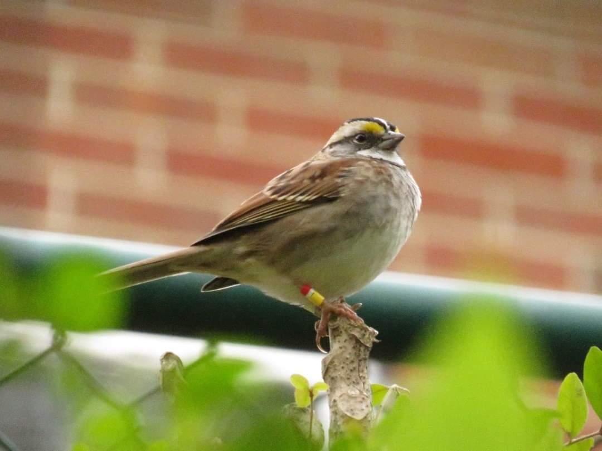

White-throated Sparrows (Zonotrichia albicollis) breed in Canada and the far northern United States, and spends winters from the East Coast west to Arizona and down to the Gulf Coast. The species is notable due to a chromosomal inversion that produced two morphs, the white-stripe morph and the tan-stripe morph. Aside from the visual differences between the morphs, this genetic quirk produces behavioral differences that have major impacts on the ecology of the species. White-striped birds are typically more aggressive, and will out-compete tan-stripes for mating and feeding opportunities. More interestingly, the morphs exhibit disassortative mating, with 98% of pairings being between two birds of opposite morphs (Hedrick et al. 2018). This effectively gives the species four sexes. On the breeding grounds, this plays out with male birds preferring white-striped females and females preferring to pair with tan-striped males. Tan-striped males make better parents, helping raise and feed the offspring, while white-striped males pursue extra-pair copulations. White-striped females, meanwhile, are more aggressive at defending nesting territories than tan-stripes. However, the apparent survival of White-throated Sparrows and how morph might impact that is not well-researched, particularly not in Tennessee. Researchers in Ohio focused on survival by age class and time, with younger birds having lower surivival rates (Perozeni and Tonra 2021). That is consistent with research on other taxa and bird species, so I expect to find a similar result.
For my thesis, I am focusing on the role morph plays in the apparent survival of White-throated Sparrows, but will be analyzing the rate by sex and age as well. I have resighting data on about 80 birds from Fall 2020 to Spring 2021, and have begun collecting more data for the Fall 2021 to Spring 2022 field season. Birds are captured using a mistnet and given an aluminum leg band, as well as a unique combination of colored leg bands for easy identification in the field. A blood sample and a feather are also collected from each bird for genetically determining the individual's sex and morph. To resight the birds, at least three hour-long surveys are conducted a week at two study sites in Clarksville, TN. The data will be analyzed using a Cormack-Jolly-Seber test in the program MARK.
The purpose of this research was to design a long-term study to monitor movement of brown trout (Salmo trutta) in the Little Juniata River during fluctuating water temperatures. Brown trout are a popular cold-water recreational sport fish in Pennsylvania, with a preferred water temperature range of 12-19°C. However, in the two years leading up to the study the temperature consistently reached 20°C in the Little Juniata River, occasionally exceeding temperatures of 23°C. First, as part of our study, we researched several techniques available to monitor fish movement including mark-and-recapture, passive integrated transponder tags, thermal tags, radio tags and sonar tags. We found that surgically implanted radio transmitters are the best option for this study because we needed year-long geospatial data. These transmitters allow collection of GPS coordinates and water temperature of each tagged fish. Next, we determined the number, size and sex of fish to track, and the capture location. To successfully implant the transmitters in wild fish, we practiced on dead trout and then on live hatchery trout. We recorded the time taken for the anesthetic to take effect, the time taken for us to perform the surgery, and the time taken for the fish to recover from the anesthetic. We captured 24 fish greater than 330mm (13in) length in 3 separate reaches within the river using rod and reel with barbless hooks. Finally, we verified and amended our data collection protocol by testing our procedure in the field.